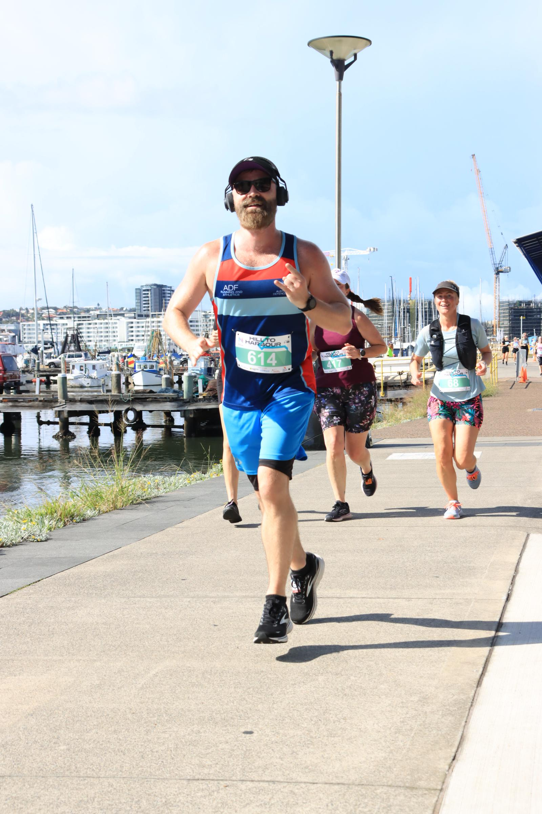
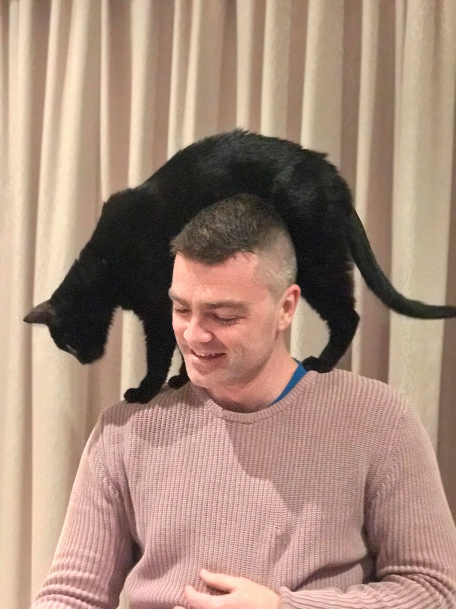
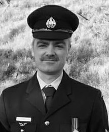

About Me
I have a passion for health and fitness, I enjoy running, lifting weights and completing obstacle course races in my spare time as well as playing touch footy. I love sports, in particular NRL, and support my beloved Melbourne Storm. I enjoy winding down playing video games or coding when I'm not hanging out with my family.
I have been married since 2022 to my beautiful wife Nicole, we've been together since 2018, and in 2020 we welcomed into the world our extremely energetic daughter Evie who keeps us on our toes with her active imagination and playful games!


Employment History
In 2006 I started working for Coles supermarkets as a retail manager where I moved around in charge of various departments until becoming a duty manager where I was responsible for the whole store. I was responsible for managing about 100 team members to ensure sales targets were met and customer service was achieved.
During my time with Coles I worked at 3 different stores and regularly completed managerial training through Coles head office in Melbourne where I honed my customer service and interpersonal skills which enabled to be a more effective member of a large team.
ADF Service
I have worked the last 10 years in the Air Force as an Air Surveillance Operator where I have achieved the rank of Non-Commissioned Officer doing various roles such as Simulation Pilot, radar & satelite surveillance and various humanitarian deployments.
I have extensive experience in instructional, training development and assessing roles, including creating fundamental courses from the ground up and spearheading WING wide audits of training standards. My various roles have seen me live across most states in Australia.

My passion has always been with computers, and for a few years I dabbled around with coding in my spare time, creating apps and websites here and there before deciding this is what I want to do for a career. I decided to go back to studying and complete my Diploma of Information Technology: Web Development and move into the IT realm.
I am now embarking on the next stage of my employment journey as a full stack web developer where I hope to help people and businesses fulfil their visions by creating robust platforms for them to get their product out to their target customer base.